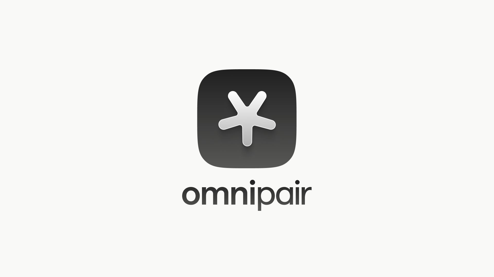
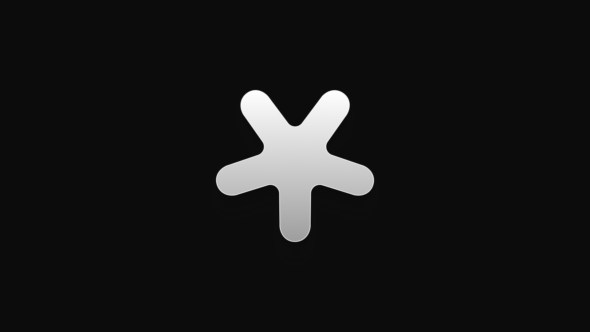
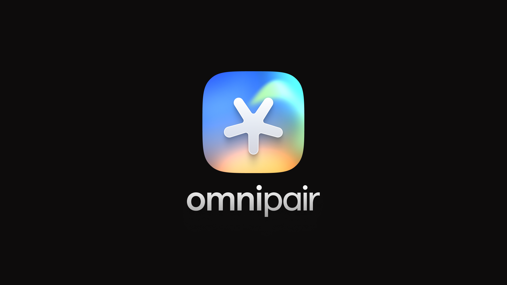

00
introduction
What this guideline is, who it's for, and how to use it.
This is the working brand guideline for Omnipair — the reference for anyone writing, designing, or building in the brand's name. It is a living document: sections marked wip are reserved and will be filled as each part of the system is finalised.
Introduction — in progress
Cover, welcome, how to use this guide (what is fixed / what can adapt), and asset download locations.
coverwelcomehow to usecontents
01
brand foundation
The logic behind the identity. Who Omnipair is, what it stands against, and the character behind every word.
Hero & Enemy
Every strong brand stands for something — and against something. Omnipair's identity is defined by what it builds and what it refuses to accept.
Omnipair is
Money Market
Permissionless Finance Layer
A market for every asset. A layer anyone can build on. No approvals required.
Omnipair stands against
Complexity
Closed Markets
Poor UX, fragmented capital, and reliance on unnecessary intermediaries. We reject them all.
Core Narrative
The financial system is full of gatekeepers. Listings. Oracles. Governance committees. Approvals.
Omnipair removes them.
By enabling permissionless borrowing, lending, and leverage through a unified market structure, Omnipair gives every asset access to financial utility.
The goal
Not to improve existing markets — to build a better standard.
The Problem draft copy
Most assets have no financial utility. Listings decide what can be traded. Oracles decide what can be priced. Committees decide what can be collateral. Liquidity fragments across separate protocols and use cases — and the user experience fragments with it.
Before Omnipair
Apply for a listing. Wait for an oracle. Petition governance. Capital spread thin across disconnected protocols.
With Omnipair
Any pair, permissionless. Pricing derived from the market itself. Spot, lending and leverage from one unified pool.
Positioning draft copy
The one-line position
"Every asset. Every use case. One unified pool."
What makes it defensible
- ✓Unified market structure — spot, lending and leverage in one pool, not stitched across protocols.
- ✓No gatekeepers — no listings, no oracles, no governance approvals between an asset and its utility.
- ✓Built for the long tail — the assets everyone else ignores are the ones Omnipair is designed for.
Brand Character
Before a single word is written, understand who Omnipair is. Personality: Rational · Confident · Visionary. Character: Technical · Refined · Independent.
The Omnipair person — your north star
"A sharp, self-assured architect in their early 30s. Shows up in a Porsche wearing a well-cut jacket and unbranded designer pants — premium, but no logos. Calm and precise, never loud. Has strong opinions about how on-chain finance should work and voices them as reasoned arguments, not insults. A quiet rebel rejecting the status quo through what they build rather than how loudly they complain. Doesn't ask for your trust — would rather you verify everything yourself. Ships only what matters."
How Omnipair challenges the market
- ✓Not rebellious for attention.
- ✓Finds structural gaps.
- ✓Quietly builds what others assume cannot work.
Brand principles
Make complexity legible
The system is sophisticated; the explanation never should be.
Let engineering create confidence
Proof over adjectives. The architecture is the argument.
Show the system, not merely the interface
Omnipair's depth is a feature. Reveal how it works.
Be ambitious without sounding inflated
Big claims, stated plainly, backed by structure.
In Progress wip
Foundation pages to come
Reserved per the master page list — content will be added as it's approved.
what is omnipairbrand beliefmissionvisionbrand promiseaudienceaudience prioritiesbrand essence
02
verbal identity
How Omnipair sounds — the principles, the register, the words it reaches for, and the words it never uses.
Tone of Voice
Confident
We speak with conviction.
Avoid
"Omnipair is an incredibly powerful platform that helps traders and DeFi users unlock their full potential with cutting-edge technology and real-time insights."
Use instead
"Omnipair gives you the infrastructure to trade on-chain without asking permission. Precise execution. No intermediaries."
Rational
Arguments over emotions. Evidence over hype.
Avoid
"The most revolutionary DeFi protocol ever built. Join thousands of users experiencing the future of finance."
Use instead
"Built for non-custodial execution at institutional speed. The architecture is open — read it, verify it, run it."
Precise
Clear language. No unnecessary complexity.
Independent
We challenge assumptions without attacking people.
Avoid
"Unlike [Competitor], we don't charge hidden fees or lock your assets."
Use instead
"Your assets remain yours. Every fee is visible before execution. That's the whole model."
Visionary
Focused on where markets are heading. Not where they are today.
Voice Spectrum
Omnipair's tone doesn't shift wildly by context. Think of it as one person who knows which room they're in — never performing, always calibrated.
Formal ↔ Casual
Professional and precise, but not stiff. Technical vocabulary used correctly, not wielded to impress.
Warm ↔ Cold
Slightly cool. Not cold — there's respect for the reader. Omnipair doesn't try to be likable. It tries to be useful and correct.
Certain ↔ Tentative
Very certain. Omnipair doesn't "try to" or "hope to." Weasel words undermine credibility. State the thing.
Terminology
The words Omnipair reaches for — and the ones it avoids.
We say
Open MarketsPermissionlessVerifiableFinancial UtilityAccessMarket InfrastructureUnified LiquidityLong-Tail AssetsBuildersMarket ParticipantsOpen Finance
We avoid
DegenMoon100xRevolutionaryDisruptiveTrust UsNext GenerationYield Farming ParadiseGuaranteed
The vocabulary test
If a word could appear on any DeFi protocol's homepage without anyone noticing, don't use it. Omnipair earns its adjectives through specificity, not assertion.
Signature Phrases
Lines that capture how Omnipair sounds. Reuse, remix, or use as north stars when writing fresh copy.
- 01Financial utility should be permissionless.
- 02Every asset deserves access.
- 03Verify. Don't trust.
- 04Built for the assets everyone else ignores.
- 05Open markets win.
- 06No approvals. No gatekeepers. No waiting.
- 07The infrastructure layer for open markets.
- 08One market. More utility.
- 09Built by builders. Verified by anyone.
- 10The future of finance is permissionless.
Example Copy work in progress
Ready-to-use structures for common contexts. Fill in the specifics — the voice is already set.
Hero headline
[Specific capability], without [the thing it removes].
"On-chain execution at institutional speed, without the intermediary."
State the real capability + name what it replaces. No adjectives in the lead.
Hero subheadline
[What you actually get] + [why it's different in one clause].
"Infrastructure designed for non-custodial trading. The architecture is open — read it, verify it, run it."
Two short sentences work better than one long one. The second sentence does the work.
Feature description
[Feature name] — [one-line functional description].
"Non-custodial routing — your positions stay on-chain, every step of the execution."
No marketing prefix. Name it, define it, done.
UI error / status
State what happened. Say what to do next.
"Transaction failed — insufficient liquidity in this pool at this size. Try a smaller position or a different pair."
No apologies. No vagueness. Name the reason, provide the path forward.
Social — announcement
[What was built]. [Why it matters in one sentence]. [Where to verify it.]
"Omnipair now supports [X]. It means [concrete change for the user]. Contracts here: [link]."
Never announce that you're announcing. Start with the thing.
Long-form / docs opening
State the problem precisely. Then say what this document addresses.
"Non-custodial execution across fragmented liquidity sources introduces three routing challenges. This document covers how Omnipair handles each."
Skip the preamble. Start with the problem.
In Progress wip
Verbal identity pages to come
Reserved per the master page list.
core messagemessaging hierarchyelevator pitchbrand descriptions 25/50/100taglinevalue propositionsmessage by audienceheadline stylebody copy stylecapitalisation & naming
03primary lockups done
logo system
The Omnipair star and wordmark. Primary lockups are final; specifications and usage rules are in production.
Primary Lockups done
The primary horizontal lockup is the default expression of the brand. Stacked lockups pair the app-icon tile with the wordmark for vertical compositions.
Horizontal

Flat · on light

Flat · on dark

Shaded · on light

Silver · on dark
Stacked

Gradient tile · on light

White tile · on dark

Black tile · on light

Dark tile · on light
The Symbol
The Omnipair star — one point radiating outward. Shown standalone for app icons, favicons, avatars, and watermarks.

On light

On dark

Silver · on dark

App icon · gradient

Construction · spec
Still Required wip
Logo system pages to come
The lockups above act as the overview page. Detailed specifications will follow.
logo anatomywordmark rationalelockup hierarchyconstruction & optical alignmentclear spaceminimum sizeresponsive logocolourwaysbackgroundsmisuseplacement & scaleco-brandingfile formats
04
colour
Primary, secondary and gradient palettes with hierarchy, ratios and accessibility rules.
Colour system — in progress
Palette, values and usage rules will be documented here once finalised. No colours on this page are official until then.
primary palettesecondary palettegradientscolour hierarchy & ratioslight & dark modefunctional coloursaccessibilitymisuse
05
typography
Typefaces, hierarchy, scale, and rules for numerals and data.
Typography system — in progress
Primary, secondary and monospace typefaces with full hierarchy and scale, pending final selection.
primary typefacemonospacehierarchytype scalenumerals & datatypography on colourmisuse
06
layout system
Grids, spacing, composition principles and responsive behaviour.
Layout system — in progress
grid systemspacing scalecontainer widthscompositionasymmetryedge behaviourlayout examples
07
core graphic system
The visual devices beyond the logo — the star as a graphic device, pairing and convergence, frames, lines and connections.
Graphic system — in progress
One of the most important Omnipair sections. Without it the identity depends too heavily on the logo alone.
core visual ideastar as graphic devicepairing & convergenceframes & containerslines & connectionsprimary metaphorcropping · scale · density
08
engineered glass
A recognisable Omnipair asset, not merely a rendering style — precision, refraction, one system revealed as several outcomes.
Engineered glass system — in progress
purpose of glassmaterial propertiescolour reflectionslight & dark mode glassglass logolighting ruleswhen to use / not usemisuse
09
technical diagrams
The diagram language that explains the system and establishes technical credibility.
Diagram system — in progress
diagram typesgrid · nodes · connectorslabels & iconscolour codingstatescomplexity levelsanimation
10
iconography
Icon style, grid, stroke and usage across product and marketing.
Iconography — in progress
icon stylegrid & strokecorner & terminal treatmentUI / product / feature iconssizes & containers
11
photography
Environmental imagery with strict rules — scale, clarity, atmosphere. No generic premium-tech landscapes.
Photography direction — in progress
role of photographylandscape imageryinfrastructure imageryhuman photographygrading & atmospherephotography with UI / glass / logomisuse
12
motion
Controlled, precise, smooth, systematic. Motion with informational purpose.
Motion system — in progress
motion personalitylogo & symbol motionconvergence motionglass motionUI motioneasing & durationloops & loadingmisuse
13
product identity
The visible relationship between brand and product — detailed components live in the product design system.
Product identity — in progress
brand-to-product relationshipproduct colour & typebuttons & controlscards · panels · tableschartsstatesscreenshots in marketing
14
applications
Proof the system works — website, product, docs, social, presentations, events.
Applications — in progress
websiteproduct interfacedocumentationsocial systempresentation systemeventsmerchandiselaunch campaign
15
asset library
Downloads, naming, version control and governance.
Asset library — in progress
downloadsfolder structurefile namingversion controlapproval processchangelog